Method of pani puer
- Pani Puri Recipe:-
-
This popular street food doesn`t need any introduction! Potato, onion,
chickpeas, coriander chutney stuffed crispy puri drenched in sour and
spicy mint flavored water (pudina pani) easily fills one`s mouth and
takes taste buds on a journey of heaven and it is no wonder that it`s
a popular street snack along the length and breadth of India an known
as gol gappa, puchka, pakodi, Pani Puri, etc. Preparing pudina vala
pani and masala for panipuri at home is not only a healthier way of
enjoying it but also allows you to customize it the way you like it.
It is very simple to assemble and one can easil find puffed puri at
any Indian grocery store or prepare at home with this recipe.
Ingredients for Pani:-
- 1/2 cup Mint Leaves
- 1/2 cup Coriander Leaves,chopped
- 1-2 Green Chilli, chopped(or to taste)
- 1/2 inch pieces of Ginger
- 1½ medium size Lemon
- 3 tablespoons Sugar
- 1 teaspoon Chaat Masala Powder
- 1/4 teaspoons Black Salt (kala namak / sanchal)
- 4 tablespoons Boondi, optional
- Salt to taste
- 4 cups Water
- Ingredients for Masala:-
- 1½ cups boiled, peeled and mashed Potato (approx. 3 medium)
- 1/2 cup boiled Kala Chana (black chickpeas)
- 1/2 teaspoon Red Chilli Powder
- 1/2 teaspoon Cumin-Coriander Powder
- 1/4 teaspoon Chaat Masala Powder
- 2 tablespoons finely chopped Coriander Leaves, optional
- Salt to taste
Notes:
Soak the kala chana (1/4 cup) for 7-8 hours or overnight
in water. Boil chana and potatoes with salt and water in a pressure
cooker for 3-4 whistles over medium flame or until cooked.
- Method for Pani:-
step-1
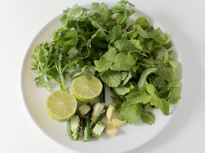
- Rinse coriander and mint leaves in water and take all
the ingredients of pani.
step-2

- Add mint leaves, coriander leaves, green chilli, ginger
and lemon juice (lemon juice is added while grinding to
prevent the mint leaves from turning dark) in the small
chutney jar of a grinder.
step-3

- Grind until smooth paste (if required, add 1/4 cup
water while grinding).
step-4
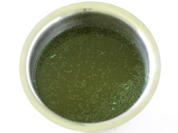
- Transfer them to a large bowl and add sugar,
chaat masala powder, black salt and 4 cups water.
Stir with a large spoon and mix it properly. Taste for
the salt and add as required. Pani is ready; place it in
a refrigerator for at least 1-hour before serving or use
it at room temperature. If you like soft boondi, mix it now.
If you like crispy taste of boondi then mix it at the time of serving.
- Method For Masala:-
step-5
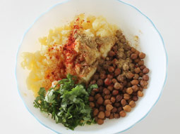
- Take mashed potato, kala chana, red chilli powder, cumin-coriander powder,
chaat masala powder, coriander leaves and salt (add only if you have not
added while boiling the potatoes and chana) in a bowl.
step-6

- Mix them together with a spoon. Masala is ready.
- Assemble Pani Puri:-
step-7

- Take each puri and gently make a large hole on its top-middle side with
a spoon or your index finger or thumb for stuffing.
step-8

- Stuff it with masala (more or less, as you like). Sprinkle onion and
sev over it and drizzle a drop of date tamarind chutney over it. Take
pani-puri water in a medium bowl. Dip each puri in water and enjoy…
- Dahi Puri Recipe:-
- Its hard to find anyone who doesn`t like to enjoy chaat!
Dahi Puri Chaat is yet another member of popular Indian street chaats
that is made by stuffing crispy puffed puris with boiled potatoes and
topping it with combination of sweet, sour and spicy chutneys, onion,
sev and beaten curd (dahi) giving it a perfectly balanced tongue tickling
taste. It is perfectly suited as a party-snack as it can be easily
prepared in large quantities, ingredients can be prepared in advance,
just needs assembling at the time of serving and guests can customize it
to their taste. This step by step photo recipe of Dahi Puri explains how
easy it is to make it at home.
- Ingredients:-
- 8 Puri (Golgappa Puri)
- 1/2 cup boiled and chopped Potato
- 1/4 cup chopped Onion
- 2½ tablespoons Sweet Date Tamarind Chutney
- 1½ tablespoons Green Chutney
- 2 teaspoons Garlic Chutney, optional
- 1/2 cup Curd, beaten
- 1/4 cup Sev
- Coriander Leaves, for garnishing
- Directions:-
step-1
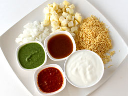
- Prepare Sweet Chutney, Green Chutney and Garlic Chutney,
by following their recipes. Mix 1-teaspoon garlic chutney
with 1-teaspoon water to dilute it. Keep all other ingredients
ready.
step-2
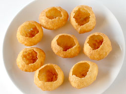
- Gently make a hole on the top side of each golgappa puri by
cracking it in the center with a spoon or index finger. Take
one serving plate and arrange them on it.
step-3
- Fill each puri with 1-tablespoon potato and 1/2 tablespoon onion.
step-4
.jpg)
- Drizzle 1-teaspoon date tamarind chutney over potato.
step-5
- Drizzle 1/2 teaspoon green chutney over it.
step-6
- Drizzle 1/4 teaspoon garlic chutney over it.
step-7
.jpg)
- Pour 1-tablespoon curd over each puri.
step-8
.jpg)
- Sprinkle Sev over it and garnish with coriander leaves.
- Sev Puri Recipe :-
-
Sev puri is one of the popular Indian chaat. The combination of papdi
(crispy flat puri), sev (deep fried gram flour noodles), boiled potatoes
(batata), moong (green beans), onion, curd and assortment of chutneys
like green chutney and tangy date tamarind chutney make it simply
irresistible. Learn how to make it at home by following this easy
chaat recipe with step by step photos.
- Ingredients:-
- 16 Flat Chaat Puri (Papdi)
- 2/3 cup boiled and chopped Potatoes
- 1/4 cup boiled Moong (green beans), optional
- 1/2 cup finely chopped Tomato
- 1/2 cup finely chopped Onion
- 6 tablespoons Khajur Imli ki Chutney
- 4 tablespoons Green Chutney
- 1/2 teaspoon or to taste Chaat Masala Powder
- 1/2 cup Nylon Sev
- tablespoon Chopped Coriander Leaves
- Directions:-
step-1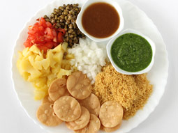
- Prepare green chutney and khajur imli ki chutney according
to their recipes in advance. Boil the potatoes and green
moong beans in salted water. Keep all required ingredients
ready before assembling the chaat.
step-2
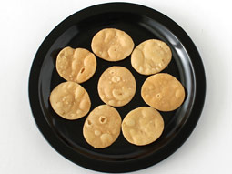
- Take two serving plates and arrange 8-papdi puris on each plate.
step-3
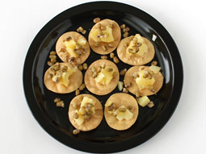
- Place 1/2 tablespoon chopped potato and approx. 1-teaspoon
moong over each papdi.
step-4
- Place 1/2 tablespoon onion and 1/2 tablespoon tomato
over each papdi.
step-5
- Top each one with 1-teaspoon khajur imli chutney.
step-6
- Top each papdi with 3/4 teaspoon green chutney.
step-7
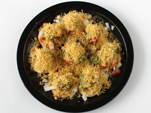
- Sprinkle 1/4 cup sev and chaat masala powder to taste over
each serving plate.
step-8
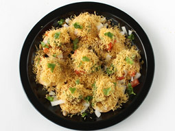
- Garnish with chopped coriander leaves. Sev puri chaat is ready
for serving. Serve it immediately to get the crispy taste of puri
and sev with chutneys. Assemble it at the time of serving because
it will turn soggy within few minutes.
- Bhel Puri Recipe:-
-
Bhel Puri is one of the popular chaat in India and it is a
delicious mixture of puffed rice, sev, tomato, potato, onion and
sweet-sour-spicy chutneys. Follow this instant and easy recipe and
make yummy bhelpuri chaat at home in just few minutes.
- Ingredients:-
- 8 Flat Puri (Papdi)
- 2 cups roasted or plain Puffed Rice (kurmura/mamra)
- 1/2 cup Nylon Sev
- 1/3 cup boiled and chopped Potatoes
- 3 tablespoons finely chopped Onions
- 1/3 cup finely chopped Tomato
- 1 Green Chilli, seeded and finely chopped, optional
- 1½ tablespoons Khajur Imli Chutney (Date Tamarind Chutney)
- 1 tablespoon Green Chutney
- 1 teaspoon Garlic Chutney, optional
- 2 tablespoons chopped Coriander Leaves
- 1/2 teaspoon Chaat Masala Powder
- Directions:-
step-1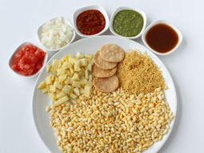
- Make all the chutneys by following their recipes. Mix 1/2
teaspoon prepared garlic chutney with 1/2 teaspoon water to
dilute it. Prepare all the ingredients required to make the
bhel puri.
step-2
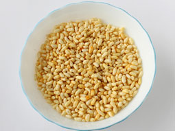
- Take puffed rice in a large bowl.
step-3
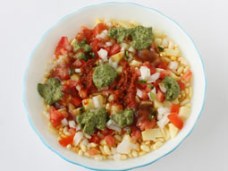
- Add chopped potatoes, chopped tomatoes, chopped onion and
chopped green chilli.
step-4
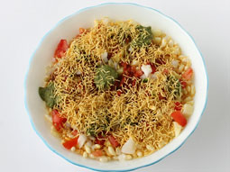
- Add khajur imli chutney, green chutney and garlic chutney.
step-5
.jpg)
- Add nylon sev and chaat masala powder.
step-6
.jpg)
- Mix all ingredients together with a large spoon.
step-7
- Garnish with coriander leaves. You can either add crushed papdi
or serve it with whole papdis according to your choice. Bhel
puri is ready. Divide it into 2 equal portions and transfer
to serving plates. Serve it immediately because it will turn
soggy within few minutes.
- Golgappa Puri Recipe:-
-
Golgappa Puri, a round shaped small crispy puri that is small enough to easily fit in your mouth, is a basic ingredient in many chaat recipes like pani puri, dahi puri etc. This puri is hollow that allows you to make a hole on top and fill it with varieties of stuffing like boiled potato, sprouted moong beans, boiled chickpeas, ragda etc., top with sweet and spicy chutneys to make tongue tickling chaats. Many like to enjoy it alone by just adding boiled mashed potato, coriander, few drops of lemon and a sprinkle of chaat masala powder. Making golgappa puri at home is is easy but time consuming affair if you want to prepare it in large quantity and so generally, I prefer to buy them from grocery store. However, store bought ones are generally large or very hard and ruins the excitement just after few mouthfuls. However, with this step by step photo recipe of golgappa puri, making right sized melt in the mouth puris for panipuri at home is super easy.
- Ingredients:-
- 1 cup Fine Semolina (rava/sooji)
- 2 tablespoons Maida (all purpose flour)
- 1/4 teaspoon Baking Soda
- Salt to taste
- Oil, for deep frying
- A small round shaped Lid to cut puris
- Directions:-
step-1.jpg)
- Take semolina, maida, baking soda and salt in a wide mouthed bowl.
step-2
.jpg)
- Add water in small incremental quantities and bind stiff dough.
step-3
.jpg)
- Cover it with a damp cloth and keep aside for 20-25 minutes.
step-4
.jpg)
- Remove the cloth and knead again until smooth texture.
step-5
.jpg)
- Divide dough into 4 equal portions. Take each portion and give it a round shape like ball. Press it between your palms and place on rolling board.
step-6
.jpg)
- Roll it out using a rolling pin into round shaped roti with thickness like phulka roti or chapathi (approx 1-2 mm). Do not roll it very thin or very thick. If it is very thin then puri will not puff up while deep frying and if it is thick then puri will not turn crispy after deep frying.
step-7
.jpg)
- Make small round puris by cutting it using a round shaped small lid (approx.2-2.5 inch diameter) as shown in photo.
step-8
.jpg)
- Remove extra dough and mix it with remaining dough. Make puris from remaining dough.
L-step
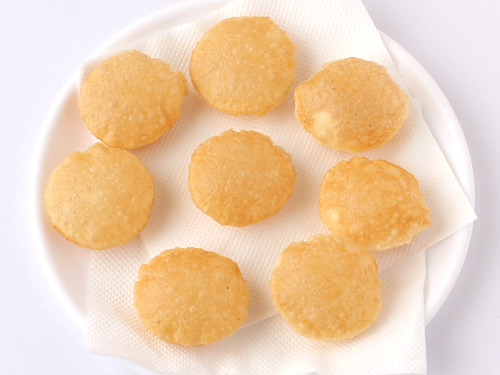
- Heat oil in a deep frying pan over medium flame for deep frying.When oil is medium hot, take 5-6 puris and slide them gently in oil(do not drop them together-do it one after another). Press each puri a little with spatula (to puff them up). Deep fry them until crispy and light golden brown. Remove and place them on paper napkin to absorb extra oil. Store them in an airtight container after they cool down and consume within 2-3 weeks.